From Lab to Life
Replicability, Applicability, and Generalisation
in Social Psychology
Dr Lukas Wallrich • 9 Feb 2026
About Me
Lukas Wallrich
- Senior Lecturer in Organisational Psychology
- Trained Social Psychologist, focused on intergroup relations
- Co-Director of FORRT (Framework for Open and Reproducible Research Training)
- Research interests: Meta-Science & Diversity
Opening Poll
"What's the main problem with the replication crisis?"
Replication is part of the story.
But it's not the whole story.
Three Questions Framework
When evaluating research, ask:
| Question | What it means |
|---|---|
| [0. Reproducibility] | Same data + same code → same results (baseline for trust) |
| 1. Replicability | Does this hold up when repeated? |
| 2. Generalisation | Does this apply beyond the original sample? |
| 3. Applicability | Does this matter in the real world? |
Why Three Questions?
A finding can:
- Replicate perfectly in labs
- AND still be trivial for real-world prediction
- AND only work with specific populations
All three matter. They're different.
Discussion
What are you currently most concerned about in the social psychology evidence you have seen so far?
Most confident about?
Discuss with 1-2 people around you.
Today's Roadmap
- Replicability (+ reproducibility) — Why self-correction fails, and how to fix it
- Generalisation — Beyond WEIRD
- Applicability — Lab to life (why effects shrink)
- Becoming a Critical Reader — Practical evaluation skills
- The Way Forward — Open Science and your role
Replicability
But Make It Count
The real scandal isn't that findings don't replicate.
It's that the field doesn't self-correct.
The Evidence: OSC 2015
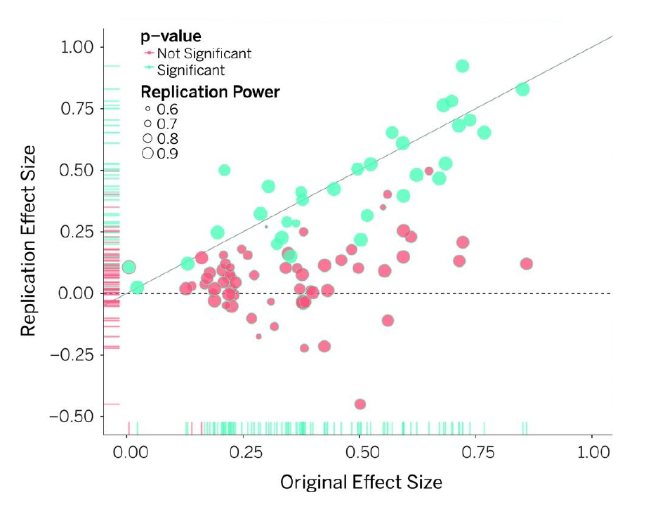
But did this change citations?
Nonreplicable papers continued to be cited more than replicable ones (Serra-Garcia & Gneezy, 2021).
Failed replications predict citation declines of at most ~14% (Clark et al., 2023).
Psychology vs Other Fields
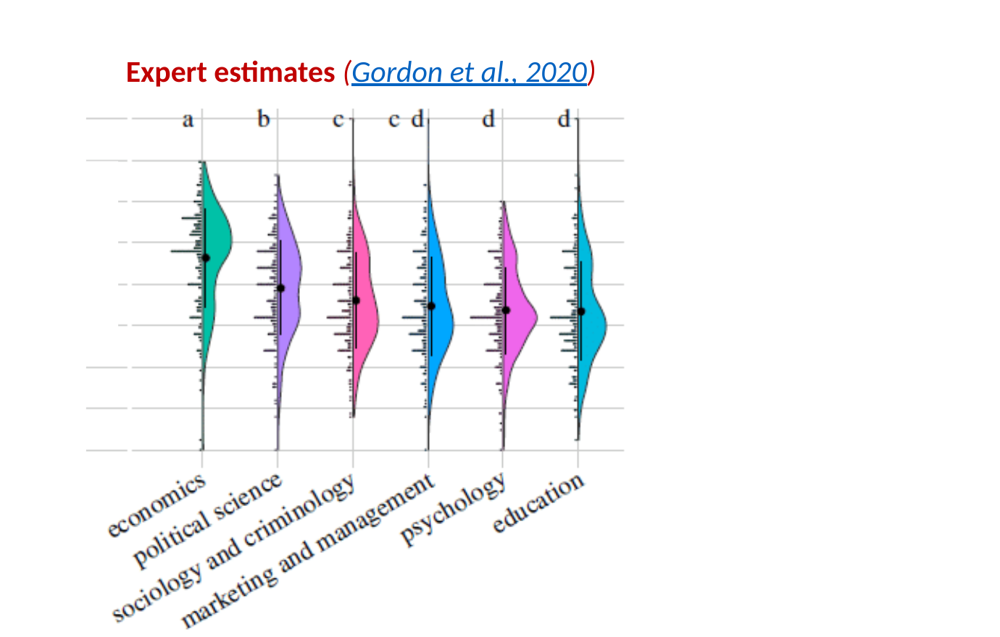
Experts estimated what % of findings would replicate in each field.
Psychology (and education) ranked lowest. (Gordon et al., 2021)
Ego Depletion
Roy Baumeister's "ego depletion" ():
Willpower is a limited resource that depletes with use
Large pre-registered replication (Hagger et al., 2016):
d = 0.04 (effectively zero)
Current status:
Still in textbooks. Still cited approvingly.
scite.ai tries to track valence of citations
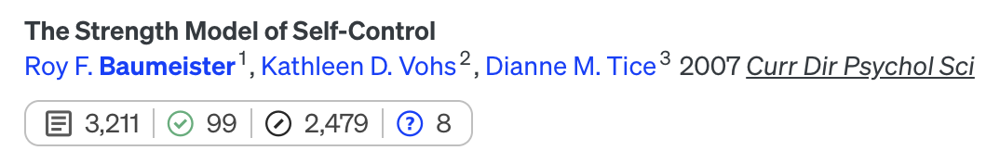
Social Priming
John Bargh's "elderly priming" (Bargh et al., 1996):
Thinking about elderly people makes you walk slower
Replication attempts:
Multiple failures to replicate (Doyen et al., 2012)
Current status:
Original paper: nearly 7,000 citations. Failures: far fewer.
Why No Self-Correction?
- Replications are rare: Only ~5% of psychology papers are replications ()
- Textbooks slow to change
- Easier to cite exciting original than boring failure
- Journals don't reward publishing replications
- Discoverability: Search engines rank by relevance (i.e., citations); replications aren't linked to originals
Addressing this: Making Replications Count (MARCO) — UKRI-funded project
Why is Replicability Low?
| Problem | Solution (e.g.) |
|---|---|
| Publication bias | Registered Reports |
| Selective reporting | Open data & methods |
| QRPs (p-hacking, etc.) | Preregistration |
| Low power | Justify sample sizes |
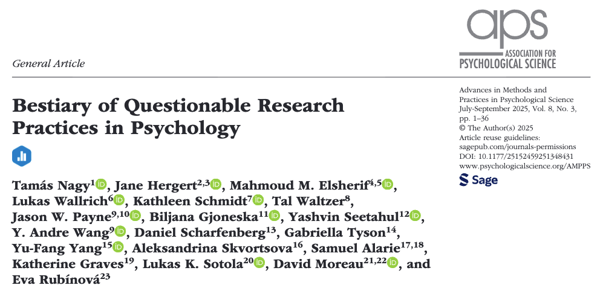
Classic Example: "False Positive Psychology"
Simmons et al., 2011 demonstrated they could "prove" that:
Listening to "When I'm Sixty-Four" (The Beatles) makes you younger
- The finding was statistically significant (p < .05)
- They used no fabrication — only standard analytic practices
- Published in Psychological Science to demonstrate the problem
How Did They Do It?
- Include unreported conditions (3 songs)
- Include many potential dependent variables
- Include many potential control variables
- Check for statistical significance after every 10 participants
- Selectively use control variables
No fabrication of any data or statistical mistakes
All common practices (back then) — no outright fraud required
Even a Monkey with a Typewriter
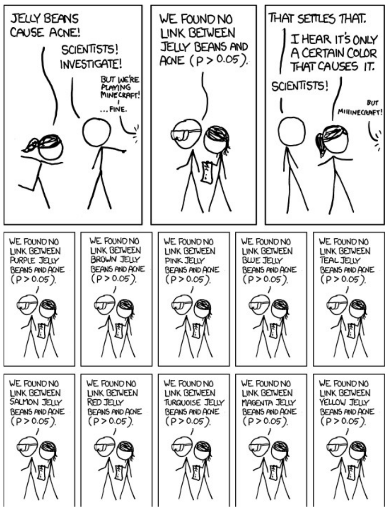
Try It Yourself
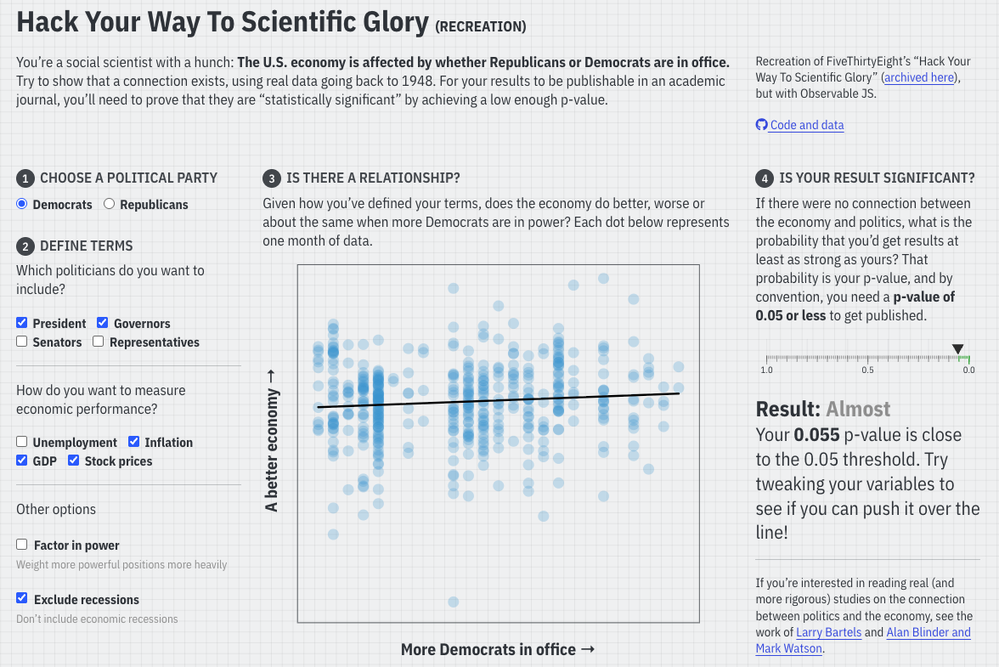
Example: Selectively Reporting DVs (or IVs)
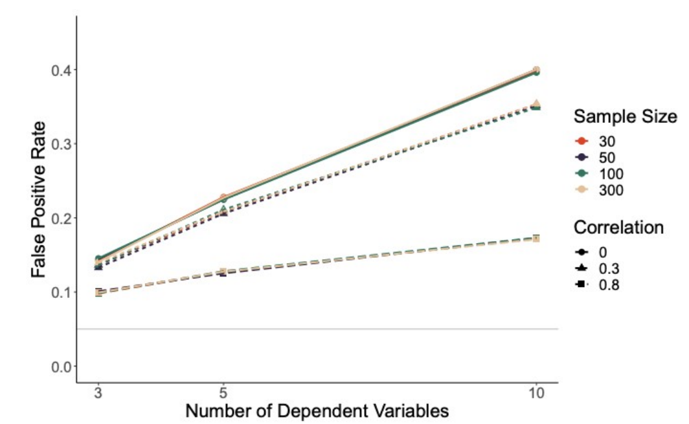
False positive rate increases dramatically with more dependent variables.
Note: selective interpretation of the same DVs is also problematic.
Registered Reports
Traditional process:
Do study → Analyse → Write → Submit → Review → Maybe publish
Registered Reports:
Write intro + methods → Submit → Review → Commit to publish → Do study → Analyse → Publish
In-principle acceptance regardless of results (if you follow the approved protocol).
But is replication enough?
Even if we fix these problems...
...a study that replicates isn't necessarily one that
generalises or applies.
A study of 100 US undergrads that replicates with 100 more US undergrads...
...has told us it's replicable with that population.
It hasn't told us it's true about humans.
Trio Discussion (4 min)
Think of one (surprising) finding from your lectures so far.
If it replicated in a different lab with similar participants, would that increase your confidence it's "true"?
Why or why not?
Generalisation
Beyond WEIRD
What You Already Know
- The "WEIRD" sampling problem (Henrich et al., 2010): 96% of samples from Western industrialised countries
- That matters (sometimes): Bond & Smith, 1996 found conformity higher in collectivist cultures
Let's go deeper.
Case Study 1: Self-Enhancement
The "universal" finding:
Self-serving bias — we take credit for successes, blame failures on circumstances
In every intro psych textbook.
Heine et al., 1999 studied this cross-culturally...
Quick Poll: Self-Enhancement
What do you think they found in Japanese samples?
- Same as Western samples
- Near zero
- Reversed (self-critical)
The Answer
Heine et al., 1999:
Western samples:
Self-enhancing
(take credit for success)
Japanese samples:
Self-critical
(take more responsibility for failures)
Not smaller. Opposite direction.
What This Means for Theory
Theories built on "universal" self-enhancement:
- Often invoke evolutionary explanations
- "It's adaptive to see yourself positively"
If half the world shows the opposite pattern...
...that theory is wrong.
Case Study 2: Emotion Recognition
Paul Ekman's claim:
Six (later seven) universal basic emotions, recognised across all cultures:
- Happiness • Sadness • Fear
- Anger • Surprise • Disgust
- (+ Contempt)
One of psychology's most famous findings.
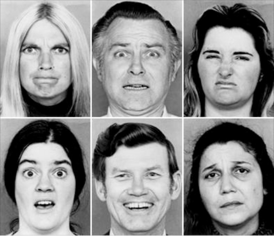
The Challenge to Universality
James Russell's critique: Ekman used forced-choice methods
"Is this face showing anger, fear, or disgust?"
"What is this person feeling?"
When you give people the categories, they'll use them — even if they wouldn't naturally think that way.
Jack et al., 2012 tested this using data-driven methods: participants adjusted computerised faces to show each emotion, revealing their internal mental representations without being constrained to Ekman's categories.
Quick Poll: Emotion Recognition
What do you think Jack et al. found with East Asian participants?
- Same pattern as Western participants
- Different pattern entirely
What might that look like?
The Answer: Different Patterns
Jack et al., 2012 — Glasgow: "we accessed the mind's eye of 30 Western and Eastern culture individuals"
East Asian participants:
- Focused more on the eyes
- Overlapping representations for surprise/fear and disgust/anger
Western European participants:
- Used whole face (especially mouth)
- Six distinct emotion categories
Not "smaller effect" — qualitatively different categorisation
What This Means for Practice
Ekman's categories are embedded in real-world technology:
- AI emotion recognition systems trained on his six categories
- Used in hiring, security screening, education
If those categories don't map onto how people from different cultures actually experience and express emotion...
...these systems are biased by design.
When Effects Do Generalise
Not all findings are culturally specific. Some show the same direction everywhere:
Example: Asch Conformity Effect
- Bond & Smith, 1996: Meta-analysis of 133 studies across 17 countries
- Found conformity effect everywhere
- But: effect size varied (higher in collectivist cultures)
Generalisation ≠ identical effects.
Solutions for Generalisation
| Problem | Solution |
|---|---|
| Western-only samples | Psychological Science Accelerator |
| Single-culture author teams | Diverse collaborations |
| Imposed categories | In-culture research |
| Implicit universality claims | Explicitly discuss generalisability |
Caveat: This is hard — how do you measure "culture"? Risk of stereotyping or overgeneralising.
Temporal Generalisation
Psychology studies a moving target.
- Conformity declining since 1950s (Bond & Smith, 1996)
- Social attitudes shifting
- Technology changing social behaviour
A finding from 1970 might not replicate in 2025 — not because it was flawed, but because society changed.
Replicating Findings Over Time
Example: Testing whether anomie leads to authoritarianism via perceived lack of control
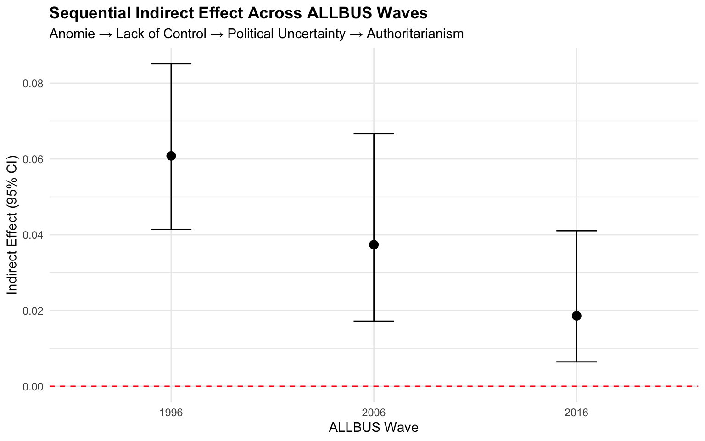
Paper showed effect in 2006. My replication suggests decline over time.
Same measures, same analysis — different era, different result.
Large-scale repeated surveys (World Values Survey, General Social Survey, European Social Survey) enable this kind of temporal replication.
See also Project Implicit
Data from millions of participants since 2007 (my reanalysis).
Implicit bias (IAT)
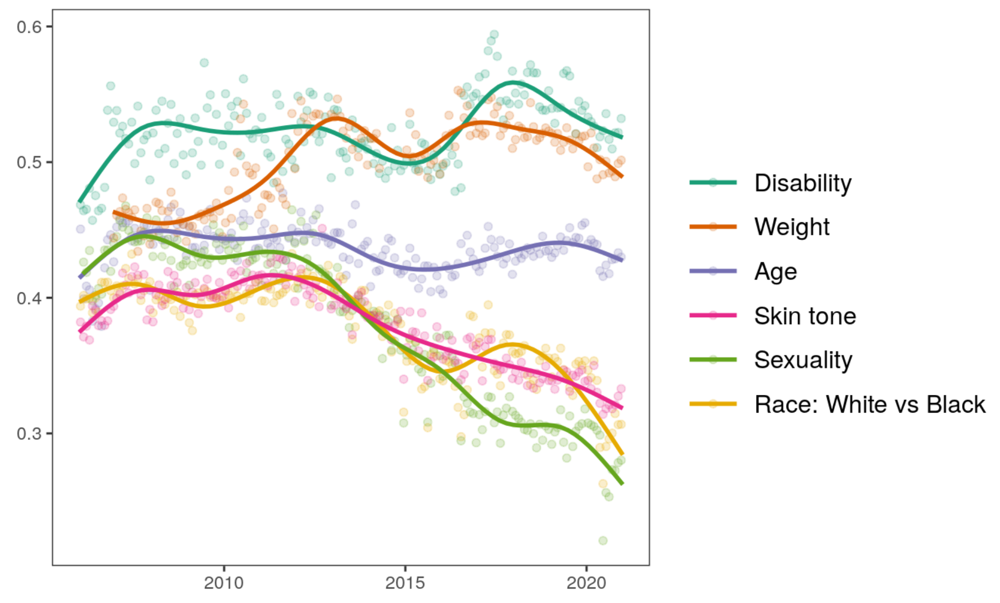
Explicit bias
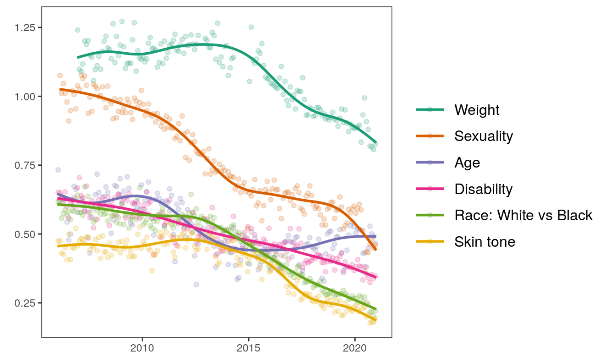
Trio Discussion (4 min)
Pick a finding from your lectures.
- What sample was it originally studied on?
- Where might it NOT generalise?
- Which populations?
- Which time periods?
Break
15 minutes
Back at
Questions & Reactions
Share any questions or thoughts so far
Applicability
Lab to Life
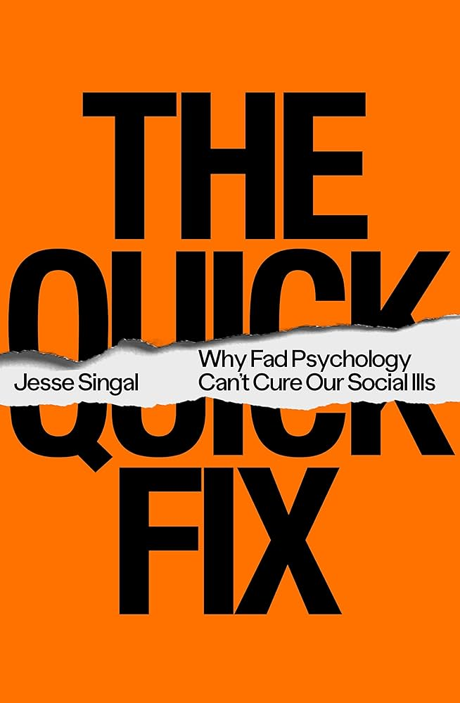
Jesse Singal (2021)
"There's a fundamental mismatch between psychology's current capabilities and what it's being asked to deliver."
- Lab effects rarely survive real-world complexity
- Interventions scaled without adequate testing
- Commercial interests distort science communication
A finding can:
- • Replicate perfectly
- • Generalise across cultures
AND still not predict anything in the real world.
The Attitude-Behaviour Gap
LaPiere (1934):
Restaurant owners said they wouldn't serve Chinese guests.
Then served them when they arrived.
Attitudes ≠ Behaviour
Opposite patterns today?
(You know this from Week 4)
Contact Hypothesis — The Evidence
Allport's Contact Hypothesis:
Intergroup contact reduces prejudice
Pettigrew & Tropp, 2006 meta-analysis (515 studies):
r = -.21 (real, replicable association)
But real-world evidence is more mixed:
- Positive example: Mousa, 2020 — Christian-Muslim soccer teams in Iraq
- Rigorous experiments: Paluck et al., 2019 meta-analysis of field experiments: r = .19 (but with PAP: r = .01)
- Preregistered studies: Lowe, 2025 — meta-analysis of 41 preregistered experiments found r ≈ .05 (much smaller)
Why Contact Doesn't Always Translate
Paluck et al., 2021 (Annual Review):
In labs:
- Controlled motivation
- Equal status ensured
- Cooperative interdependence
In real-world programmes:
- Motivation varies
- Status often unequal
- Cooperation not guaranteed
The moderators that make contact work are hard to engineer at scale.
Artificial Research Paradigms
Some social psychology studies use highly artificial scenarios:
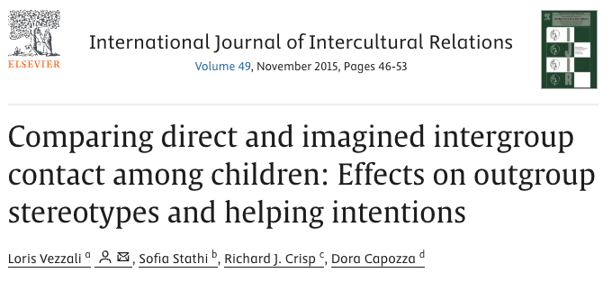
Vezzali et al., 2015
How much can we learn about real intergroup relations from aliens?
Why Lab Findings Shrink
Four reasons:
- Demand characteristics — People know they're studied
- Duration — Lab measures immediate effects; life unfolds over time
- Implementation is hard — Scaling requires fidelity, training, resources
- Competing influences — One signal in a noisy environment
And When Application
Fails Entirely?
Four ways psychological findings disappoint in the field
Case Study: Power Posing
Holding expansive "power poses" for 2 minutes increases testosterone, decreases cortisol, and boosts risk-taking.
Replication (N=200): No effect on hormones or behavior ()
Failure mode: 🔴 Not replicable
Case Study: Implicit Bias Training
Training programs can reduce implicit bias (IAT scores), which should reduce discriminatory behavior.
Result: IAT scores ↓ but no change in discriminatory behavior (even in the lab)
— Meta-analysis:
Failure mode: 🟠 Proxy ≠ target
Case Study: Growth Mindset
Teaching students that intelligence is malleable improves academic achievement.
Meta-analysis: d=0.08 ()
National experiment (N=12,000): Only at-risk students in supportive schools benefited ()
Failure mode: 🟡 Boundary conditions
Case Study: Emotional Contagion
Emotions spread through social networks — manipulating Facebook feeds changes users' emotional expression.
Effect size: d ≈ 0.02 — about 1 fewer emotional word per 1,000 words
Failure mode: 🔵 Trivially small
Before Trusting a Finding...
Ask these questions to check applicability:
| Critical Question | Failure Mode |
|---|---|
| Was it replicated? | 🔴 Not replicable |
| Is the outcome measured that which matters? | 🟠 Proxy ≠ target |
| In what population/context? | 🟡 Boundary conditions |
| How large is the effect? | 🔵 Trivially small |
What Makes Findings More Applicable?
- Field experiments — Real behaviour, natural settings
- Longitudinal designs — Track effects over time
- Replication in applied settings — Not just more labs
- Intervention testing — Actually implement (ideally by practitioners), measure outcomes
Rigour vs. Epistemic Ambition
Methods that maximise control can reduce how well findings travel to messy settings.
Goal: Build evidence that travels by combining:
- Rigorous designs (incl. preregistration / careful measurement)
- Methods that capture reality (field studies, longitudinal data, mixed methods)
Becoming a Critical Reader
Practical Evaluation Skills
Red Flags
When reading a paper, be concerned if you see:
- Small sample, no power analysis (N < 50 per cell)
- Effect sizes too good (d > 0.8 is rare; d > 1.0 is very rare)
Reference: male/female height difference is d ≈ 1.8 - Multiple measures, selective reporting
- No preregistration for confirmatory claims (in new papers)
- "Conceptual replications only" — never same operationalisation
- p-values cluster just under .05 (.048, .043, .049...)
- Covariates appear/disappear across analyses
What Do Effect Sizes Actually Mean?
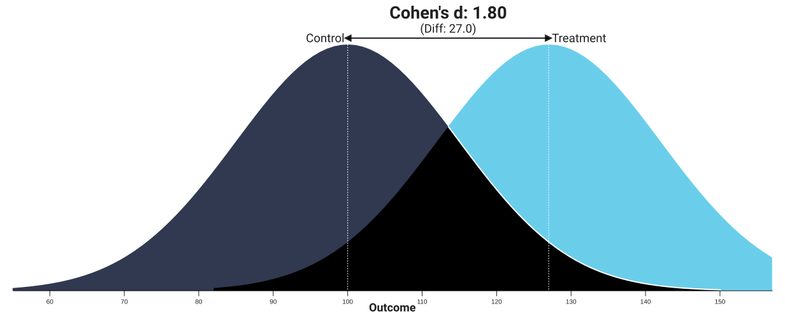
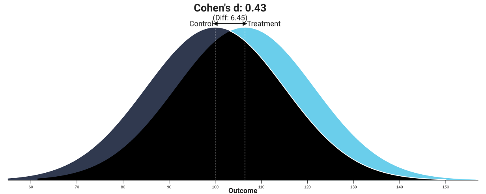
Most social psychology effects: d = 0.2–0.5. Effects above that warrant scrutiny.
Green Flags
More confidence if you see:
- Preregistration badge or statement with link
- Open data badge or statement with link
- Power analysis with justification
- Effect sizes consistent with meta-analyses
- Direct/motivated replication across studies/contexts
- Transparent limitations section
- Distinguishes exploratory from confirmatory
Fictional Excerpt 1: Social Exclusion
Abstract: Social exclusion is a fundamental threat to belonging needs. We investigated whether experiencing social exclusion influences consumer preferences. Forty-seven undergraduate students completed a social exclusion manipulation (Cyberball paradigm — a simulated multi-player web game) followed by measures of consumer preferences, mood, and self-esteem. Results showed that excluded participants showed a marginally significant preference for branded products (M = 4.32, SD = 1.21) compared to included participants (M = 3.78, SD = 1.45), t(45) = 1.92, p = .06, d = 0.40.
Methods: Participants completed measures of product preferences (our key dependent variable), brand attitudes, willingness to pay, mood (PANAS), self-esteem (Rosenberg scale), and belongingness needs (Need to Belong scale).
Pair discussion (3 min): What's concerning about this study?
Excerpt 1 Debrief
Abstract: ... Forty-seven undergraduate students completed a social exclusion manipulation (Cyberball paradigm) ... showed a marginally significant preference for branded products ... p = .06, d = 0.40.
Methods: Participants completed measures of product preferences (our key dependent variable), brand attitudes, willingness to pay, mood, self-esteem, and belongingness needs.
Problems:
- Small sample (N = 47)
- No preregistration mentioned
- Multiple measures collected, only one reported as "the" DV
- "Marginal" significance (p = .06) treated as meaningful
Fictional Excerpt 2: Stereotype Threat
Abstract: We examined whether stereotype threat impairs maths performance in women. 198 participants were randomly assigned to threat or control conditions. Controlling for maths anxiety and prior maths grades, we found that the effect of stereotype threat was moderated by gender identification, such that highly-identified women showed significantly worse performance, B = -0.31, SE = 0.15, t(192) = 2.07, p = .048.
Methods: Our primary hypothesis was that stereotype threat would impair maths performance in women compared to control.
Results: The main effect of condition was not significant, p = .43. However, an interaction between condition and gender identification emerged...
Pair discussion (3 min): What's concerning about this study?
Excerpt 2 Debrief
Abstract: ... Controlling for maths anxiety and prior maths grades, we found that the effect of stereotype threat was moderated by gender identification, such that highly-identified women showed significantly worse performance, B = -0.31, SE = 0.15, t(192) = 2.07, p = .048.
Methods: Our primary hypothesis was that stereotype threat would impair maths performance in women compared to control.
Results: The main effect of condition was not significant, p = .43. However, an interaction between condition and gender identification emerged...
Problems:
- Covariates selectively included ("controlling for...")
- Interaction "emerged" — HARKing language (post-hoc finding)
- Original hypothesis quietly abandoned (no direct effect)
- p = .048 (just under threshold)
Fictional Excerpt 3: Power Posing
Abstract: We examined whether "power poses" increase risk-taking. Data collection continued until a stable pattern emerged. Participants (N = 86) were randomly assigned to poses before a gambling task. Three participants were excluded for failing attention checks, and four statistical outliers were removed. Results confirmed our hypothesis: power pose participants showed greater risk-taking, t(77) = 2.09, p = .041, d = 0.47.
Pair discussion (3 min): What's concerning about this study?
Excerpt 3 Debrief
Abstract: We examined whether "power poses" increase risk-taking. Data collection continued until a stable pattern emerged. Participants (N = 86) were randomly assigned to poses before a gambling task. Three participants were excluded for failing attention checks, and four statistical outliers were removed. Results confirmed our hypothesis: power pose participants showed greater risk-taking, t(77) = 2.09, p = .041, d = 0.47.
Problems:
- Optional stopping ("until a stable pattern emerged")
- Outlier removal without pre-specified criteria
- p = .041 after exclusions (just under threshold)
In real papers, these issues are less obvious.
But once you know what to look for, you'll start noticing them.
The Way Forward
Open Science and Your Role
Open Science — The Six Pillars
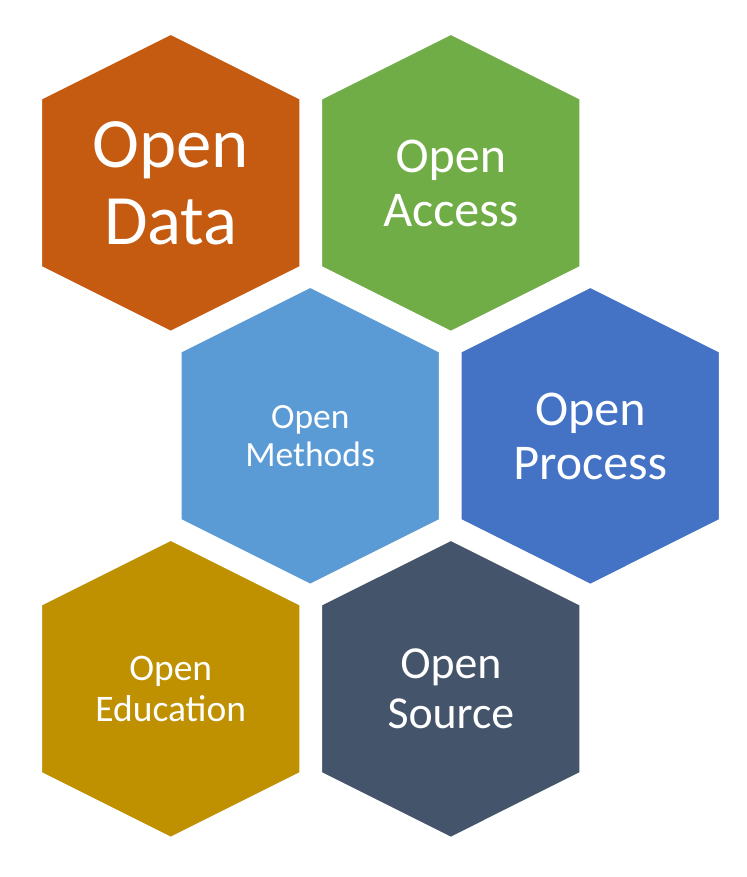
| Pillar | What it means |
|---|---|
| Open Access | Research freely available |
| Open Data | Data published with papers |
| Open Methods | Analysis code shared |
| Open Process | Preregistration, Registered Reports |
| Open Source | Free software (R, jamovi) |
| Open Education | Teaching materials shared |
Registered Reports: The New Gold Standard
(Recap: we saw this earlier — key solution worth emphasising)
Addresses multiple problems:
- ✓ Greatly reduces publication bias
- ✓ Reduces analytic flexibility for confirmatory tests
- ✓ Improves design (reviewers check)
- ✓ Works for field studies too
Over 300 journals offer the Registered Reports format.
As Consumers — Reading Research
When reading papers, look for:
- Preregistration statement or badge
- Open data statement or badge
- Effect sizes and uncertainty (not just p-values)
- Sample description (who, how many, from where)
- Does the sample match the population of interest? (generalisation)
- Does the conclusion match the evidence?
As Producers — Your Dissertation
You can adopt these practices now:
- Preregister your hypotheses (AsPredicted.org — 10 minutes)
- Justify sample size before collecting data (and only ask questions you can answer)
- Share your data (ethics permitting)
- Report effect sizes and confidence intervals
- Distinguish exploratory from confirmatory
Resources for Open Science
Preregistration:
- AsPredicted.org — Simple, fast (10 min)
- OSF Registries — More comprehensive
Share your work:
- PsyArXiv — Preprints
- ThesisCommons — Dissertations
Learn more / Get involved:
- FORRT — Framework for Open and Reproducible Research Training
Reflections
- One thing I might do differently when READING research:
- One thing I might do differently when DOING research:
The crisis revealed real problems.
It also created real solutions — and evidence suggests they're working ().
Let's use and produce evidence with care — so that our science deserves trust.
Thank You
Questions?
l.wallrich@bbk.ac.uk